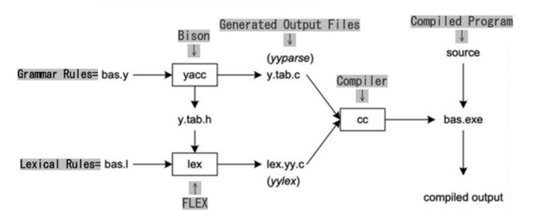
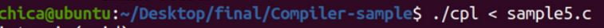
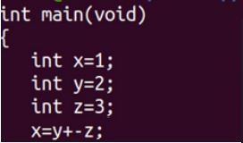
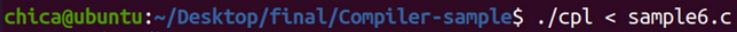
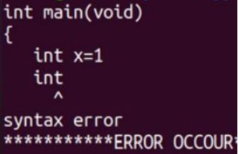

Flex and Bison are used for generating lexical analyzer and syntax analyzer for Linux，it can build programs that handle structured input. They were originally used to developing compilers and modern replacements for the classic Lex and Yacc.



▲ normal situation


▲ sysntax error
Ways to generate assembly language
method one : GCC
Compile to get the intermediate code : $ gcc –S sample3.c
Assemble assembly language into executable file : $ gcc sample3.s -o sample3